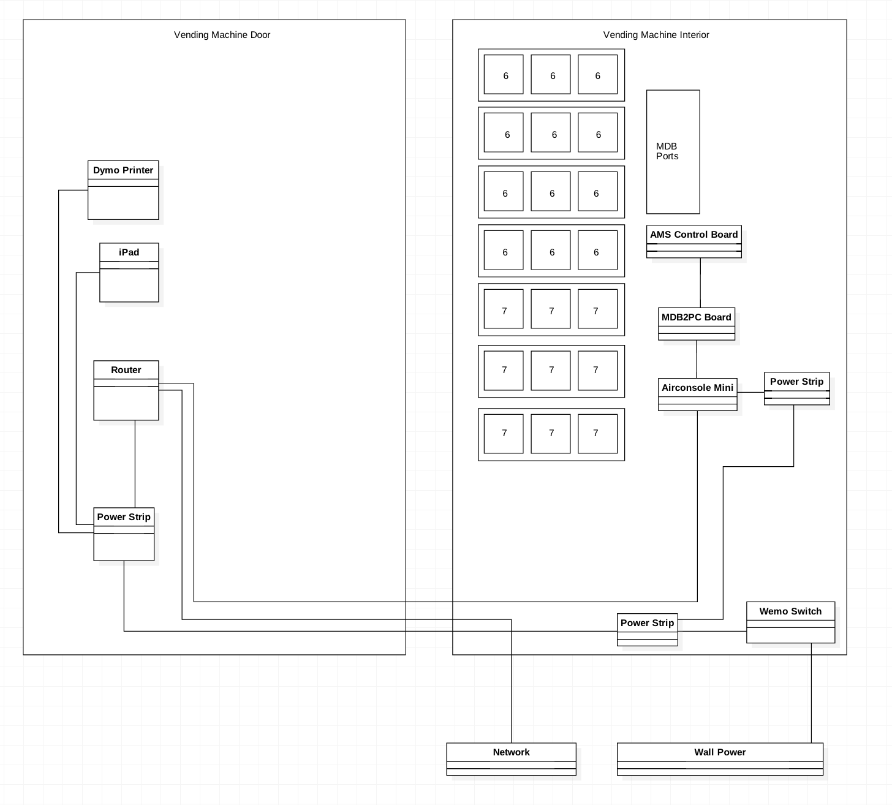

Introduction
Kiosk
Hardware
| Item | Purpose |
| Free-standing kiosk (Andrew has details) | Holds the ipad and printer. Could be replaced by a vending machine. |
| iPad (9.7" iPad or iPad Air) | Main interface |
| Dymo printer (LabelWriter 450 Turbo)
website | Prints the badges. |
| Apple Airport router (Express)
website | Connects the ipad (and optionally the vending machine) to the network. |
| Wemo power switch
website | Allows us to hard reset everything remotely. |
Setup
- Install the Repconnex Kiosk app on the ipad.
- Open the app.
- Open the admin section by tapping five times in the lower, right-hand corner of the screen.
- Log in as a facility admin for that facility.
- Click the "Select Kiosk" button and select the appropriate kiosk for which the device will act.
Vending Machine
Hardware
| Item | Qty | Purpose |
|---|---|---|
| AMS Slim Gem (G8624S3C#163) | 1 | The vending machine itself. |
| Snack trays, deeper spirals | 1 | |
| Upstate Networks PC2ASD | 1 | Allows vending machine to receive RS232 commands. |
| Airconsole Mini | 1 | Connects the vending machine to the network. |
| iPad (9.7" iPad or iPad Air) | 1 | Main interface |
| Dymo printer (LabelWriter 450 Turbo) | 1 | Printer for badge labels |
| Apple Airport router (Express) | 1 | Connects the ipad and vending machine to the network |
| iPad Security Mount | 1 | Used to hold the iPad |
| Tilting wall bracket | 1 | Used to attach the ipad to the wooden panel and to allow the ipad to tilt up and down for easy viewing |
| Wemo power switch | 1 | Allows us to hard reset everything remotely |
| Generic power strip | 1 | |
| Power cord to PC connector adapter | 1 | Connects the power strip to the internal vending machine power |
| 3-wire 8' extension cord | 2 | Used to get power from the main power strip to the door assembly and interior assembly |
| 50' ethernet cable | 1 | Used to connect the router to the network |
| 25' ethernet cable | 1 | Used to connect the router to the airconsole mini |
| 34" x 7" x 1/2" wooden panel | 1 | Used to cover cavity from original vending machine controls |
| 1" velcro strips | 1 | Used throughout assembly |
| 1" hinge | 2 | Used to hold the printer shelf to the wooden panel |
| 12" small chain | 1 | Used to keep the printer shelf at the appropriate angle |
| Small hook | 1 | Used to attach the chain to the wooden panel |
| Small screw eyehook | 1 | Used to attach the chain to the printer shelf |
Graphics
Each vending machine has an opening where the original control hardware was located. This opening is 6.5" wide by 29" tall.
If the kiosk hardware is housed separately from the vending machine, then a rigid board with graphics must be created to close the opening.
If the kiosk hardware is housed inside the vending machine, then the ipad will take up some of the opening space, but a rigid board with graphics must be created to close the rest of the opening.
Scrubs Inventory
Once Scrubs are purchased in bulk, they need to be unpackaged, folded into the correct dimensions, and put into the appropriately sized bag in order to fit into the vending machine. Optionally, the bag then needs to be stickered with the company's logo.
Matte-finishe, white poly mailer bags 6" x 9"
Wiring Diagram

Setup
Help videos:
- Before setup, general overview
- After removing normal vending machine controls
- After setup, finished wiring and mounting hardware
- Special note about power to vending machine
Instructions:
- Remove uneccesary parts.
- Remove the plastic exterior piece with the number pad and anything attached to it except the small display and number pad board (both of which are attached via ribbon cables to the control board). Leave the display and number pad hanging for the time being.
- Remove the metal change mechanism located on the inside of the machine. This will not be used and just takes up room.
- Remove the interior metal door (despite what the video shows). This door is no longer necessary since we're using a wood panel to cover the hole left by the removal of the normal vending machine controls.
- Unplug the two connectors that go to the switch at the top of the door.
- Remove the door and hinges.
- Remove the switch from the door.
- Use a rubber band to permanently keep the switch in a closed position.
- Reattach the two connectors to the switch and leave hanging.
- Replace main power strip (video).
- Remove the power cable that enters the back of the vending machine.
- At the bottom of the machine on the inside, unplug the cable from the vending machine. This should be a PC connector.
- Remove both the interior and exterior panels that keep the power cable in place.
- Remove the power cable completely.
- Insert the new power strip into the open hole where the previous power strip was.
- Connect the power strip to the vending machine with the PC to power cord connector.
- Plug the power strip into the wall.
- Turn on the vending machine to verify power works.
- Remove the power cable that enters the back of the vending machine.
- Attach shelf to wooden panel.
- Screw one half of both 1" hinges to the wooden shelf.
- Locate the wooden shelf so that the printer prints out badges through the slot easily.
- Connect the other half of both 1" hinges to the wooden panel.
- From the interior of the door looking at the wooden shelf, screw the small eyehook into the back right side of the shelf.
- From the interior of the door looking at the wooden shelf, screw the small hook into the wooden panel roughly 10-12" above the shelf.
- Place the dymo printer on the shelf and verify badges exit the printer into the slot correctly.
- Connect the chain from the eyehook on the shelf to the hook on the wooden panel.
- Attach wooden panel to door.
- Cut 34" velcro strip, cut vertically in half creating two 1/2" strips of velcro.
- Attach one half of velcro strips to left and right sides of the wooden panel on the opposite side of the printer shelf.
- Attach other half of velcro strips to the interior of door just outside the left and right sides of the hole.
- Press wooden panel to hole so the velcro secures into place.
- Mount the airport express.
- Below the wooden panel on the interior of the door, locate the airport express so that cables can exit the back of the router from the left side.
- Attach velcro to the airport express and press onto the metal.
- Mount the door extension cord.
- Locate the end of the extension cord just above the change assembly at the bottom of the door.
- Attach velcro to the head of the extension cord and press onto the metal.
- Attach ethernet cables.
- Plug the 50' ethernet cable into the WAN side of the airport express.
- Plug the 25' ethernet cable into the LAN side of the airport express.
- Run the 50' ethernet cable down the bottom of the door through to the bottom of the vending machine and out the back of the vending machine with the power strip cord.
- Run the 25' ethernet cable down the bottom of the door to the left cavity of the vending machine then through the small opening at the bottom of the machine to right cavity of the vending machine.
- Run power to the right cavity of the vending machine.
- Inside the right cavity of the vending machine, locate the hole through which all the cables from the trays pass.
- Drop the power side of the extension cord down through this hole, it should drop all the way to the bottom of the vending machine where the main power strip is.
- Plug the extension cord into the power strip.
- Leave the plug side of the extension cord just hanging through the hole. It's neat as is and doesn't require mounting.
- Test the tray spirals.
- Turn the vending machine on using the switch located inside the right cavity.
- Using the number pad hanging inside the right cavity, press one of the numbers on the trays.
- Verify that the spiral turns.
- If the spiral turns, turn off the vending machine and remove the number pad and ribbon cable from the control board.
- Mount the right cavity hardware.
- Take the display that's hanging inside the cavitory and mount to the top, back of the cavity using velcro strips.
- Remove the mounting screws from the PC2ASD board.
- Mount the PC2ASD board to the left side of the cavity making sure to use plenty of velcro strips to ensure that no metal touches the metal of the vending machine.
- Connect the PC2ASD board to the main AMS control board using the number pad ribbon cable.
- Connect the airconsole mini to the PC2ASD board using the USB cable.
- Mount the airconsole mino under the PC2ASD board using velcro strips.
- Connect the ethernet cable that was previously run from the airport express to the airconsole mini.
Airconsole Mini
- Open Airport Utility and edit the kiosk router.
- Under the "Internet" tab, configure DHCP to serve addresses from
192.168.10.50to192.168.10.200. - Using a browser, open the airconsole mini at
http://192.168.10.1. - Under the "LAN" tab:
- Turn off DHCP.
- Change IP address:
10.0.1.10 - Change router:
10.0.1.1 - Change subnet mask:
255.255.255.0 - Apply settings.
- Open Airport Utility and edit the kiosk router again.
- Under the "Internet" tab, configure DHCP to serve addresses from
10.0.1.50to10.0.1.200. - Open
http://10.0.1.10in the browser to confirm the airconsole mini has the correct address.
"Free Vend" mode
- Put vending machine in “Free Vend” mode.
- Plug in number pad to control board (or use the ipad app).
- Open door hinge switch.
- Press service mode button to enter service mode.
- Press “#” to scroll through menu until “FREE VEND” is reached.
- Press “1” to VIEW / EDIT and then to toggle between Y and N.
- Press “#” to Save the setting and exit.
- Close door hinge switch.